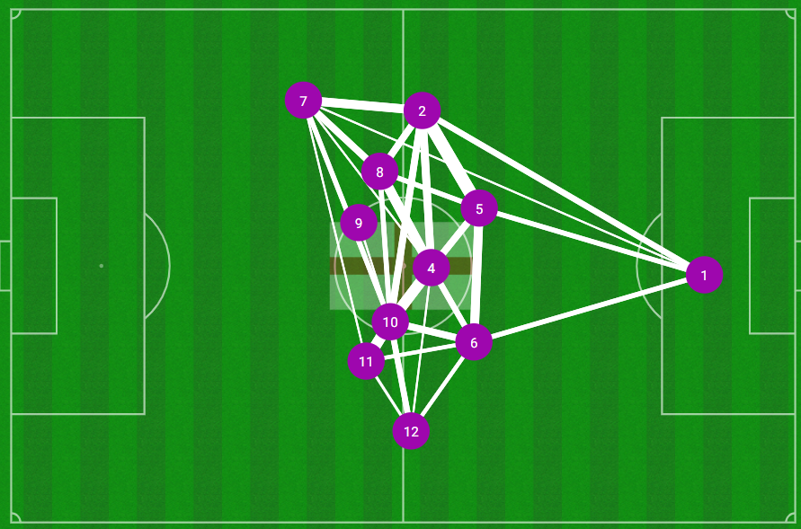
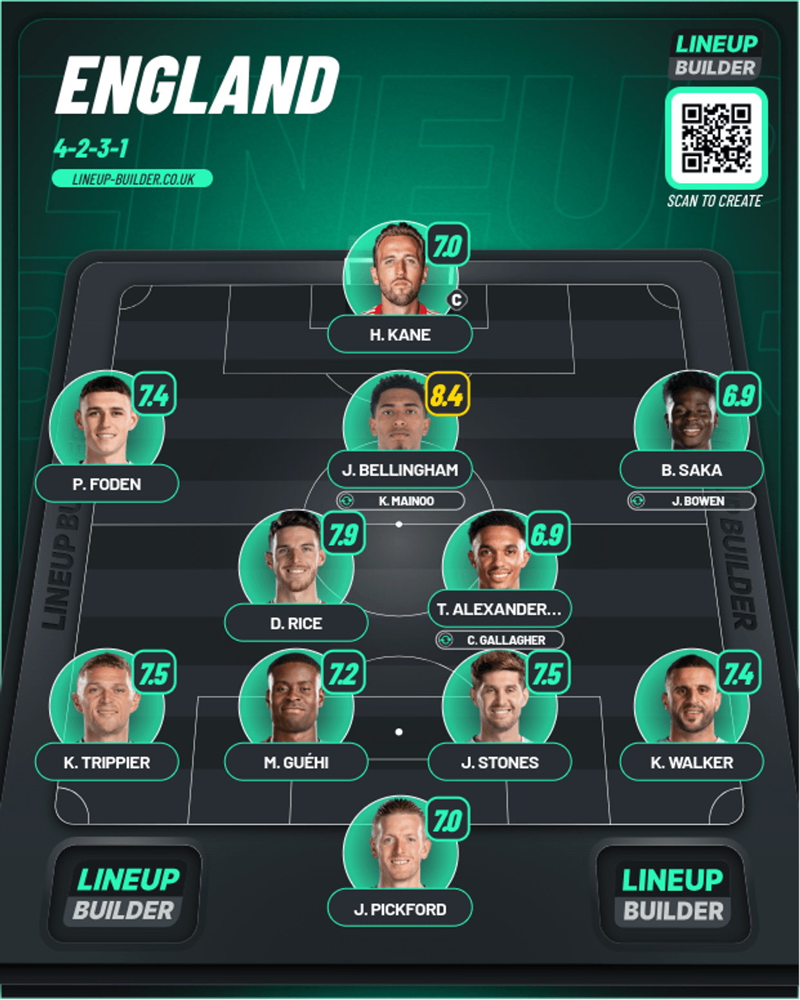
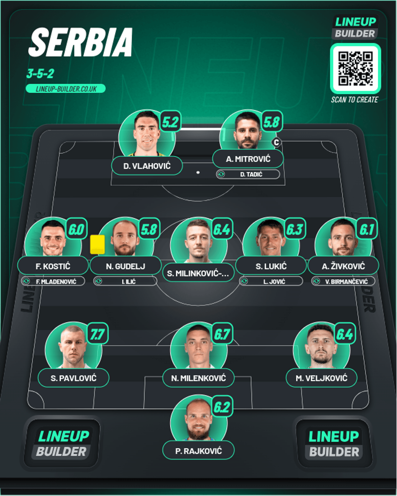

Day 3
Table of Contents
Day 3
Serbia v England
Bullet Bellingham. Boregate at his finest. This approach will bite back at you. We had a draw at the end of Day 2 and now Day 3 starts off with this utter borefest. Honestly, I watched this in the middle of the night, and it put me to sleep almost instantly, post the Bellingham goal. You know what’s coming. Let’s get into it
1st Half
We start at minute 13 where Walker finds Saka with a great ball, and he sneaked past Pavlovic to put a cross in and Bellingham was quick overpowering Milenkovic and putting a bullet header past Rajkovic to put England ahead. After that………radio silence in terms of what they were creating 😐. Trent made a colossal mistake sitting in front of the defense(Still don’t know what this idiot sees in him to play CDM over the likes of Gallagher and Mainoo) but Mitrovic blazed it just wide of the goal. Towards the end, you could see Serbia being given the freedom. I saw this happening like for like in the final they bottled against Italy where they went ahead and then they sat back…AT 1-0. I JUST MENTIONED THAT 1-0 IS A DANGEROUS SCORELINE the previous day 😡.
2nd Half
Anyway, going into the second half it was Serbia all over England, but they just couldn’t bundle it in. You got some England chances like Walker putting it across the box with no England players(Testament to how they decided to play 😒) and there was another where Bowen who was subbed on for Saka put a peach of a cross for Kane, and he could only head it near Rajkovic instead of picking a corner you know like a proper ST does(Story of his game honestly. Him and Foden were very isolated which was really horrendous from Boregate in the first place). There were more chances from Serbia than expected from this match and Boregate continues to surprise me….in how AWFUL you can manage a team that’s chock-full of talent like this. Bottled the World Cup in 2018 to Croatia and finished FOURTH. Decided to park the bus against Italy in the Euros, bottling what should have been an easy HOST COUNTRY WIN in 2021. And it didn’t stop there after he managed to bottle it in the World Cup YET AGAIN losing to France where they were ACTUALLY the better team. This kind of approach to every game is just pathetic. Because, with this kind of talent in your ranks you can hold on and also score goals. Not doing that instead of doing this is just weird. Also, this is a pass map of England in today’s match by Opta. Shows how much Kane dropped into the midfield putting nobody in front as usual and how isolated Foden really was on the left side. The thinner the line, the less passes there were between the nodes. Just all around poor to be honest. This match just made the record for the lowest shots for this tournament ever as well with 11. 6 from Serbia and 5 from England

Player of the Match - J. Bellingham

He’s had a really great season for his club, hitting the ground running immediately in his debut season for Real Madrid and also winning the Champions League as well. Honestly, I didn’t see much of that here because of you know who, but he did have the movement to score that bullet header so it was given mostly for that. Apart from that he was part of a compact unit defending a 1 goal lead which was a normal everyday Monday under Boregate. No biggie 😑.
Lineups
- Ratings from Fotmob
England

Serbia
